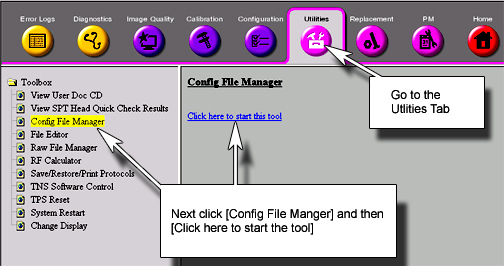
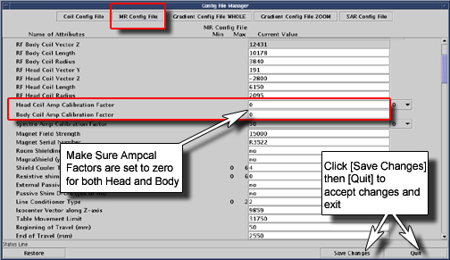
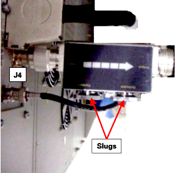
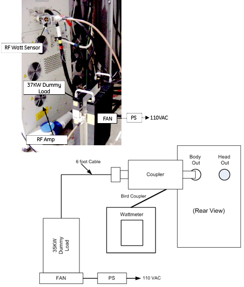
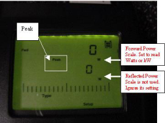
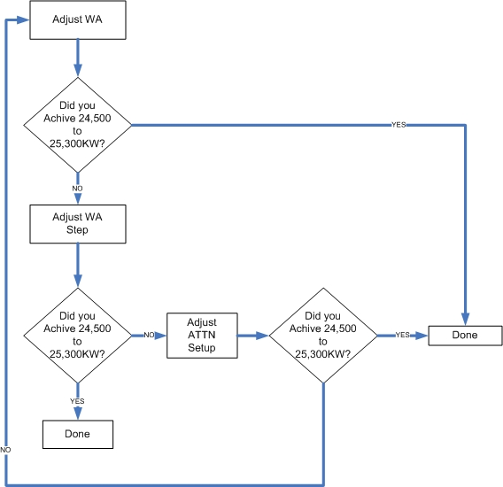
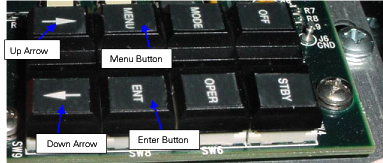

Operating Documentation
Direction 5440000, Rev# 5
Signa HDxt Service Methods
Module Version 2.0, Version Date 9/23/09
Operating Documentation |
| Required Persons | Preliminary Reqs | Procedure | Finalization |
|---|---|---|---|
| 1 | Not Applicable | 45 mins | 5 mins |
This procedure calibrates the Body mode of the 25/35 kW RF Amplifier to 25 kW, using the Power Measurement Kit (Wattmeter).
| NOTE: | This version of the amplifier should only be used when
the system was originally a Head-Only system. Reference material for this procedure:VVA Setup and ATTN Setup Keypad Controls |
| Item | Qty | Effectivity | Part# | Manufacturer | |
|---|---|---|---|---|---|
| Power Measurement Kit (Wattmeter) | 1 | - | 2372868 | - | |
| Medium Phillips Screwdriver | 1 | - | - | - | |
| 12 in. Crescent Wrench | 1 | - | - | - | |
| ||||
| FATAL ELECTRIC SHOCK HAZARD! | ||||
| THE RF AMPLIFIER IS NOT DISABLED. | ||||
| TO PREVENT FATAL ELECTRIC SHOCK, ENSURE THE RF AMPLIFIER IS DISABLED WHILE CONFIGURING THE CALIBRATION TOOLS. |
| ||||
| Prevent coil and associated switch damage by removing all phantoms and hardware (for example, Head Coil, Surface Coil, etc.) from the magnet bore. | ||||
| ||||
| Do not operate the RF amplifier with an improper load connected to its output. Doing so may permanently damage the amplifier. | ||||
To ensure the true Output Power Level is correctly measured, the ampCalHead and ampCalBody values in the Mrconfig.cfg file must initially be set to zero (0).
At the host computer, go to the Service Desktop and start the Service Browser if not already running.
Start the Config File Manger as shown in Illustration 1.
Illustration 1: Starting Config File Manager

Go to the MR Config File tab, and set Head and Body Ampcal factors to 0 (zero) shown in Illustration 2.
Illustration 2: Setting Ampcal Factors to Zero

Reboot the system.
Verify that the system is Idle, and all coils are removed from the magnet bore.
Remove the front cover of the Systems Cabinet.
On the front of the Driver Module, disable T/R Error reporting by setting the TR Switch to the Disable (default) position shown below.
Illustration 3: Driver Module Switch

| NOTE: | HV, DD and MC should remain set to Enable. |
Insert the 50 kW element into the Reflected Sensor Port (blue, P/N 4300A374-6).
Make sure the arrow on the element points in the direction of the arrow (from Input to Output) on the Sensor.
Lock the element in place using the locking tab on the sensor as shown below.
Illustration 4: RF Coupler Setup for Body Mode

Insert the 5000 W element into the Reflected Sensor Port (blue, P/N 4300A374-6). See Illustration 4.
| NOTE: | The Reflected Port is not used during this procedure. Placing the 5000 W element into this port is a safety measure; this port is not used during Body Calibration. |
Make sure the arrow on the element points in the opposite direction of the arrow on the Sensor.
Lock the element in place using the locking tab on the sensor.
| ||||
| ELECTRICAL RF BURN HAZARD! | ||||
| RF BURNS Can Occur AS A RESULT OF DISCONNECTING HELIAX CABLES WHILE THE SYSTEM IS SCANNING. | ||||
| PREVENT POSSIBLE RF BURNS WHEN DISCONNECTING HELIAX CABLES FROM J3 OR J4 ON THE RF amplifier BY VERIFYING THAT THE SYSTEM IS NOT MANUALLY PRESCANNING OR SCANNING. VERIFY THAT THE SCAN DESKTOP ICON DISPLAYS THE "IDLE" MESSAGE AND THE RF ENABLE SWITCH IS IN THE "OFF" position. |
| ||||
| Do not connect/disconnect Wattmeter Sensor while the meter is On. Always turn the meter Off prior to plugging/unplugging the Sensor. | ||||
Verify scanner is in Idle; turn Off the RF Enable at the Exciter (FP-I/O Board), or disconnect J14 (RF Drive Input) from the back of the RF Amplifier.
Disconnect the Body Cable J4 (Body Output) from the back of the RF Amplifier.
To protect the Head Amplifier section, disconnect the Head Cable J3 (Head Output) from the back of the RF Amplifier as well.
Connect the Input of the Coupler to J4 (Body Output) on the back of the RF Amplifier as shown below.
| NOTE: | Some new RF Amplifiers may require using the HN to 7/16 Adapter included in the kit. |
Illustration 5: Connecting RF Coupler to Body Output

Connect the Output of the RF Coupler to the 35 kW Dummy Load shown below.
Illustration 6: Completing Body Output Test Setup

Connect one end of the Wattmeter cable to the Wattmeter Sensor connector, and connect the other end to the Coupler. (RS232 is not used.)
| ||||
| Do not apply power to the Dummy Load without the fan operating. Doing so will result in catastrophic damage to the Dummy Load. | ||||
Make sure to plug the fan for the Dummy Load into a service outlet in the Systems Cabinet.
Reconnect J14 on the back of the RF Amplifier, or switch the RF Enable to On.
For more information on the Wattmeter, see Wattmeter (2372868) Introduction.
Press the [On] button on the Wattmeter. (If the coupler and sensor are not correctly attached to the RF Amplifier, No Sensor message will display.)
Select the arrow up button under Scale.
Type: 50000 to set the range, and press <Enter>.
Check the setting by selecting the arrow up button under Scale again.
Press <Enter> to exit this mode.
Select the arrow up button under Fwd Units, and make sure the scale reads W (or kW on some Wattmeters).
If the scale reads dBm, select the arrow up button under Fwd Units again to toggle the scale to read W (Watts) or kW (kilowatts) on the Top, Forward Power Scale.
Ignore the Bottom, Reflected Power Scale value. It is not used during Maximum Power Calibration.
Press <Shift>, and select the arrow up button under Setup.
Verify that it reads 43.
If not, type: 43 and press <Enter>. (Illustration 7 shows what should display at this time).
| NOTE: | This action displays the Sensor Type configured in the Wattmeter. This procedure uses Sensor type 43, optimized for peak power measurement. |
Illustration 7: Wattmeter Display Set to Read Peak Power Sensor

Press <Enter>, select the arrow up button under Type, and change unit of measurement to Peak.
Some kits require an offset to ensure accurate measurement. Locate the Element Offset Factors Card in the kit, and view the offset for 3T e2 Body Output. (See Illustration 8.)
Illustration 8: Element Offset Factor Card

If an offset exists, press the [Offset] button on the Wattmeter.
Enter the value that was displayed on the Offset Card from the kit.
Press [Enter]. (Illustration 9 shows what should display at this time).
| NOTE: | An offset label should flash on the Wattmeter display if an offset was entered. The meter is now configured to read RF Peak Power in Watts for the Boby Maximum Output calibration. |
Illustration 9: Wattmeter Set to Display Peak Power

Disable the UTNS. For systems using a UTNS, refer to Stopping and Starting UTNS 3.
| ||||
| Prevent coil and associated switch damage by removing all phantoms and hardware (for example, Head Coil, Surface Coil, etc.) from the magnet bore. | ||||
Prepare the system to scan in Body mode:
Click on [New Pt].
Id: geservice and press <Enter>.
Name: apb cal body and press <Enter>.
Weight (Lb): 300 and press <Enter>.
Set Patient Protocols to Service.
Select [Other], scroll through the protocol list and select 3.0T apb cal.
Select Series 1, Body, and click [Accept].
Set Landmark, and select [Save Series].
Right-click on [Research Options] and select Setup Params.
Set TG to 50, and click [Done].
Right-click on [Research Options] and select Display CVs from the drop-down menu.
Set the value of CV calmode to 5 (Dual Logamp Waveform.
Press <Enter> to save the setting.
Click [Accept].
Right-click on [Research Options] and select Download.
Remove the keypad access cover from the RF Amplifier, located on the front of the amplifier near the display shown below.
Illustration 10: Front of RF Amplifier Control Module

This section explains how to adjust the Solid State Amplifier gain of the Solid State pre-amplifier (VVA Setup) and, if necessary, adjust the Attenuation of the PA stage (ATTN Setup), the gain (WA-Variable Voltage Adjustment) of the solid-state amplifier when it is first set up to maximize its output. The Attenuation of the PA stage can also be adjusted to fine tune the final value as close as possible to 25 kW (24,500 to 25,300 Watts). VVA Setup and ATTN Setup interact with each other, so it may be necessary to go back and forth between these adjustments until the amplifier is properly calibrated. Illustration 11 shows the process flow.
Illustration 11: Process Flow

Select [Manual Prescan] and [Scan TR].
Set the Transmit Gain to 180.
Make sure everything is functioning normally and a reading displays on the Wattmeter.
Allow the scanner to pulse at TG 180 for 6 minutes. (This is due to the drop in gain that occurs over the 6-minute period.)
Slowly increase the TG to 200. (If the Amplifier trips, set the TG to its highest setting achievable without tripping.)
| ||||
| Press only the buttons required in this procedure. Avoid pressing the Mode button. It controls the Output Drive of the Solid State Amplifier, switching from the Body to Head mode of operation. See Keyboard Operation / Description of IPA and PA Stages for information on the RF Setup keypad. | ||||
While the system is pulsing RF, press the <Menu> button on the keypad located inside the RF Amplifier (Illustration 12) until the LCD display on the front of the Amplifier reads:
> ATTN SETUP
VVA SETUP
Illustration 12: RF Setup Keypad

Press the down arrow, select VVA SETUP and press <Enter>.
VVA STEP: 1. (The step size increments to the next value each time Enter is pressed.)
VVA:
Continue to press <Enter> until the desired step size is selected. For smaller and finer calibration, use smaller incremental step sizes, such as 1 or 10. (Step size values can be set to 1, 10, 20, 30, 40, 50, 60, 70, 80, 90 or 100).
Once the Step Size is selected, press the down or up arrow to adjust the Gain:
VVA Step: 10
>VVA: 3368. (This value will change by 10 counts.)
Using the down and up arrows, resume the adjustment of the gain until 25 kW (approximately 24,500 to 25,300 Watts) is achieved on the Wattmeter.
If unable to achieve 25 kW (approximately 24,500 to 25,300 Watts) on the meter display, press the <Menu> button until the keypad resets to its original state. The LCD display will be similar to Step .
Table 1: LCD Display Output
STANDBY (or OPERATE) STATE MODE: BODY Amp Hours 6194 50-526B-128 |
Proceed to Step .
This section only needs to be performed if unable to achieve 25 kW (approximately 24,500 to 25,300 Watts) with VVA Setup. (At this time the RF Amplifier is still pulsing at TG of 200.)
Press the [Menu] button until the LCD display on the front of the Amplifier reads:
>ATTN SETUP
VVA SETUP
Select <Enter>.
> ATTN: 13 (This value will change when the down/up arrows are pressed.)
While watching the Wattmater, press the down or up arrows to adjust the attenuation of the RF Amplifier PA stage.
Slowly attenuate the RF power as close to 25 kW as possible (approximately 24,500 to 25,300 Watts).
If unable to achieve 25 kW, adjust the attenuation to a value below 25 kW.
Press the <Menu> button to exit.
Press the <Menu> button again to reset the LCD display to its original setting:
STANDBY STATE MODE BODY Amp Hours 6194 50-526B-128 |
Stop [Manual Prescan].
Look at the LCD display on the front of the Amplifier. It should read 25 kW ± approximately 2000 Watts. (This will vary from site to site and can be used as a confidence indicator for the actual setting.
| NOTE: | The LCD display should not be relied upon as an accurate measurement device. |
Press the <Menu> button multiple times until the original screen on the Amplifier LCD redisplays.
Press the [Off] button. This will store the value in NVRAM.
Wait 30 seconds and press the [Operate] or [Standby] button.
Wait another 30 seconds for the Amplifier to react to the new settings.
Reduce the TG to 0 (zero) once the RF Output is calibrated to specification.
| NOTE: | If the Amplifier is set up correctly, the RF Amplifier display and Wattmeter should be close to the same value. |
Test the new Maximum Power value by restarting [Manual Prescan].
Select [Scan TR].
Slowly increase the TG to 200. (The system should not trip.)
Take a final look at the Wattmeter display, making sure the desired value displays.
Reduce TG to 0 (zero).
Stop [Manual Prescan].
| ||||
| Electrical RF BURN HAZARD! | ||||
| RF BURNS Can Occur AS A RESULT OF DISCONNECTING HELIAx CABLES WHILE THE SYSTEM IS SCANNING. | ||||
| PREVENT POSSIBLE RF BURNS WHEN DISCONNECTING HELIAX CABLES FROM J3 OR J4 ON THE RF amplifier BY VERIFYING THAT THE SYSTEM IS NOT MANUALLY PRESCANNING OR SCANNING. VERIFY THAT THE SCAN DESKTOP ICON DISPLAYS THE "IDLE" MESSAGE AND THE RF ENABLE SWITCH IS IN THE "OFF" POSITION. |
| ||||
| Do not turn connect/disconnect the Wattmeter Sensor while the meter is On. Always turn the meter Off prior to plugging/unplugging Sensor. | ||||
Verify scanner is in Idle; turn Off RF Enable, or disconnect J14 from the back of the RF Amplifier.
Disconnect the RF Wattmeter Sensor from the J4 Body Output connection.
Connect the original Body Output Cable to J4 of the RF Amplifier, and connect the original Head Output Cable to J3 on the RF Amplifier.
Re-enable RF and connect J14 on the RF Amplifier.
Perform a [Reset TPS] to ensure the RF Amplifier is in a known state to the system.
Perform Universal Power Monitor - Body Setup and Calibration to ensure the UPM is properly calibrated and functioning.